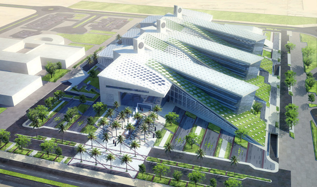

I am currently pursuing a degree in Computer Science at Qatar University. I chose this major because I have always been fascinated by technology and the potential it has to solve problems and make a positive impact on the world.
I am actively involved in a number of clubs and organizations at Qatar University. Some of the clubs I am a member of include the Computer Science Club, the Robotics Club, and the Gaming Club.
I have had the opportunity to gain valuable work experience through a number of internships while in college at Qatar University. Some of the internships I have had include:
| Summery of My internships | ||||
|---|---|---|---|---|
| internship | Company | Durations | ||
| Software Developer | Qatar IT Solutions | Summer 2020 | ||
| Data Analyst | Qatar Data System | fall 2021 | ||
| Full Stack Developer | Qatar Tech Innovations | spring 2022 | ||
Fig 2. Tokyo , Japan
After graduation, I plan to pursue a career in software development. I am particularly interested in working on projects related to artificial intelligence and machine learning.
Copyright © 2023 My College Journey